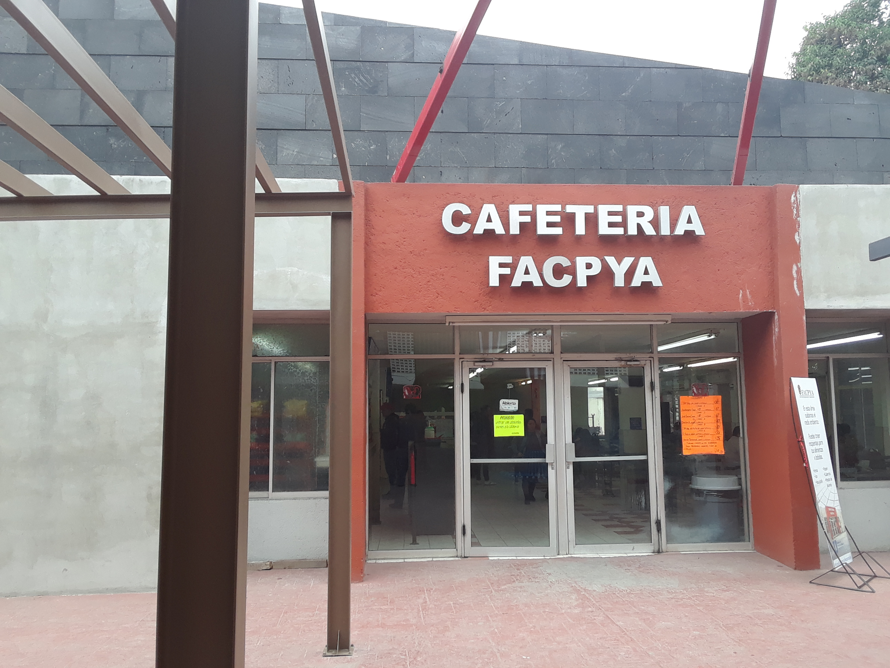
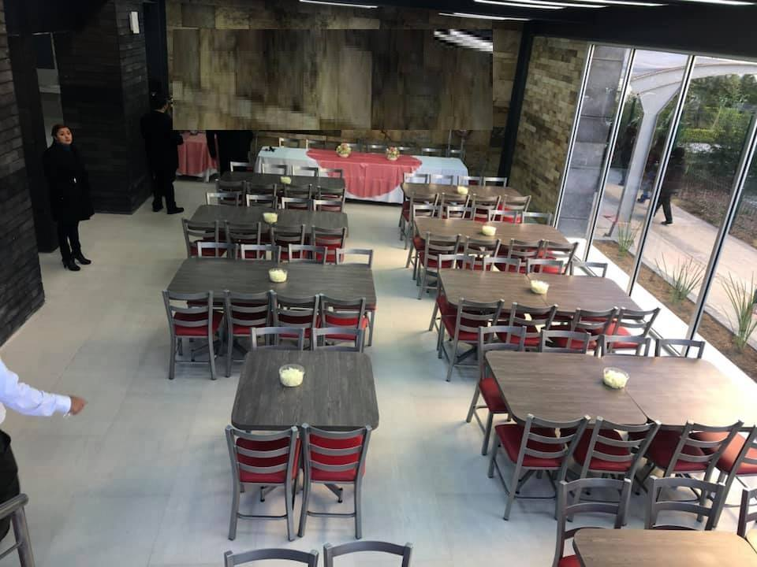
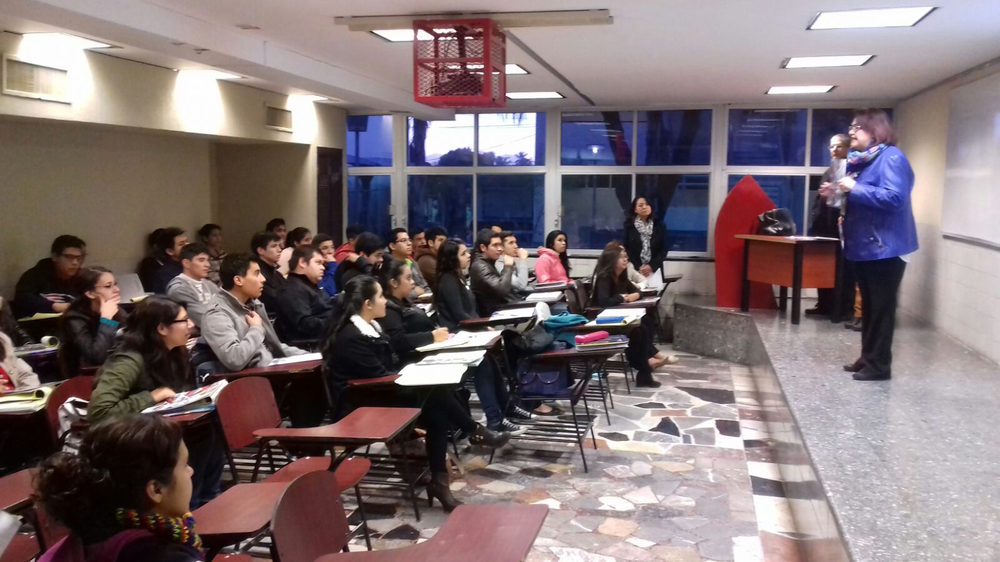
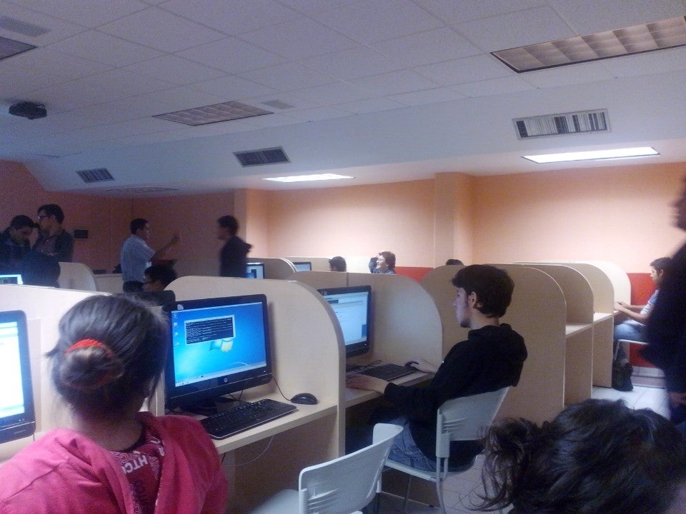
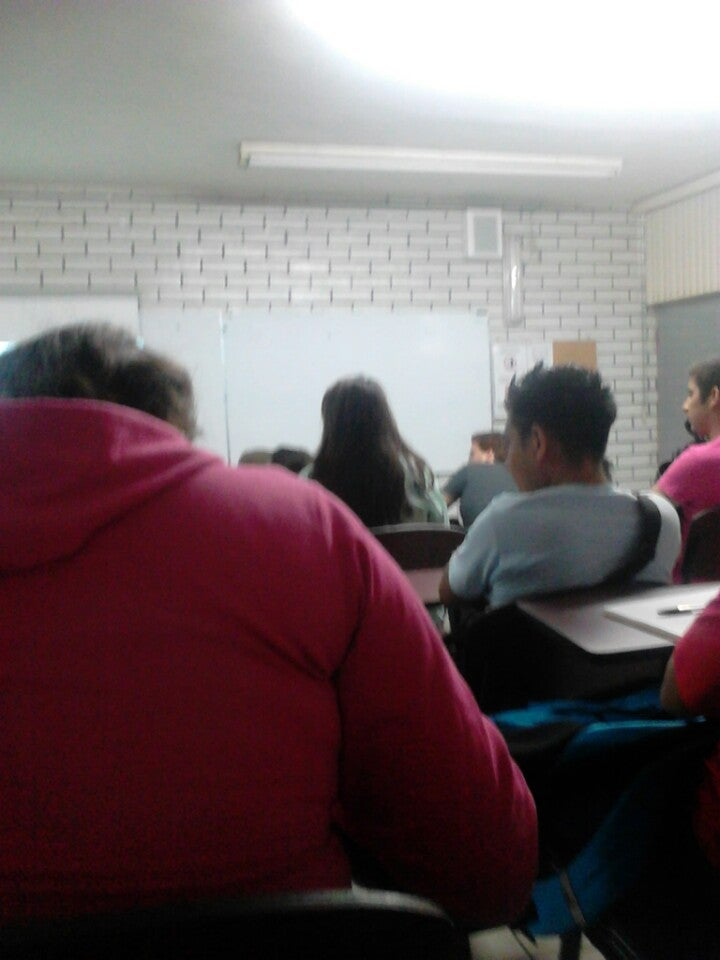
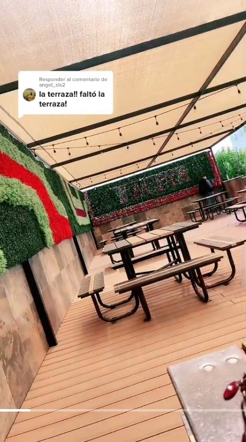
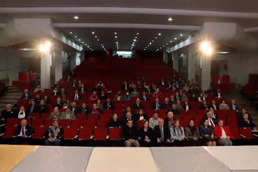
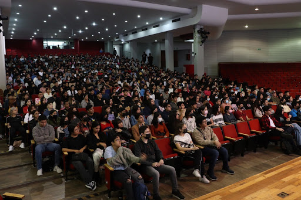
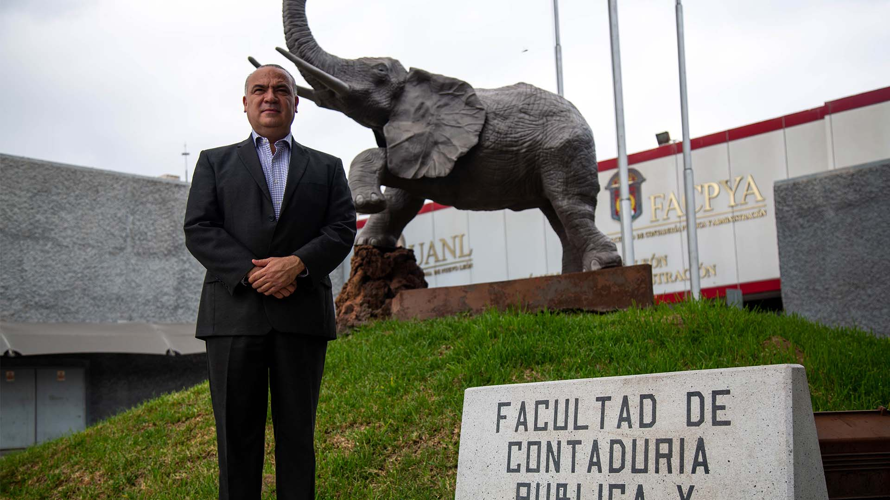

Fecha:
Ver el AutorQuien no se ha preguntado alguna vez en la vida. ¿Donde sera el mejor lugar para comerme mi torta de pierna estando en la Facultad de Contaduria Publica y de Administración?
Bueno ya no hay por que, porque venimos a responder justo eso. Empezando desde el lugar mas cotidiano y común, hasta el mejor de todos, con calificación y todo
TOP #5 Cafetería de FACPYA
Un lugar bastante tranquilo, y suficientemente limpio para comer cualquier tipo de alimento, incluso una torta de pierna, eso si es que puedes encontrar un lugar donde sentarte.
Calificación: 6.5/10
|  |  |
TOP #4 Salones / CTIC
No estoy diciendo que se tenga que hacer, Pero la adrenalina de estar en clase y al mismo tiempo degustar una experiencia culinaria como lo es una torta de pierna es algo que pocos aventureros Ahí me incluyo yo han experimentado alguna vez.
Esto claro no se debe hacer, mucho menos en las clases del catedrático JUAN GABRIEL LOPEZ SOLORZANO
Calificación: 8.0/10|  |  |  |
TOP #3 Terraza de FACPYA
Ubicada en el ultimo piso del edificio 7, el " penthouse " como dice la chaviza no? Esta es uno de mis lugares favoritos pero cada vez es mas dificil poder encontrar mesa para poder alimentarse de la suculenta torta de pierna.
Pero si puedes encontrar mesa libre, y aparte vas con tus amistades amantes de las Tortas de Pierna igual que tu, déjame decirte que te sacaste la lotería, la única razón por la que no le pongo 10 de calificación es por la dificultad de encontrar lugar.
Calificación: 8.9/10 TOP #2 El Auditorio
Ahora si señoras y señores estamos entrando a aguas profundas de la facultad.
El auditorio principal de FACPYA ha albergado muchísimos eventos y conferencias, que se pueden alargar de mas en cuestión de tiempo, por esta razón siempre es bueno tener una Torta de Pierna en tu inventario, además que no se porque dentro de este recinto, la comida y en particular el platillo estelar de este articulo, el auditorio le da un toque especial y el sabor llega a resaltar.
Calificación: 9.8/10|  |  |
Solo miren a estas personas, se ven felices, pero se verían mas felices si estuvieran comiéndose una torta de pierna en el auditorio.
TOP #1 Con Dante, el Elefante
¿Te sientes solo? ¿No tienes con quien o donde comer tu torta de pierna?
No sufras mas joven Facpyano comer a un lado de Dante, el elefante es el lugar para ti. Si ya de por si todos se toman foto con el cuando se gradúan, ¿Por qué tu no podrías ir a comer ahí?
Este lugar, sus escalones son sagrados y por eso este es el mejor lugar para comer, no solo tu Torta de pierna, sino cualquier alimento que te puedas imaginar, a continuación te mostrare con imágenes que tan acogedor es este lugar.
Calificación: 100/10|  |  |